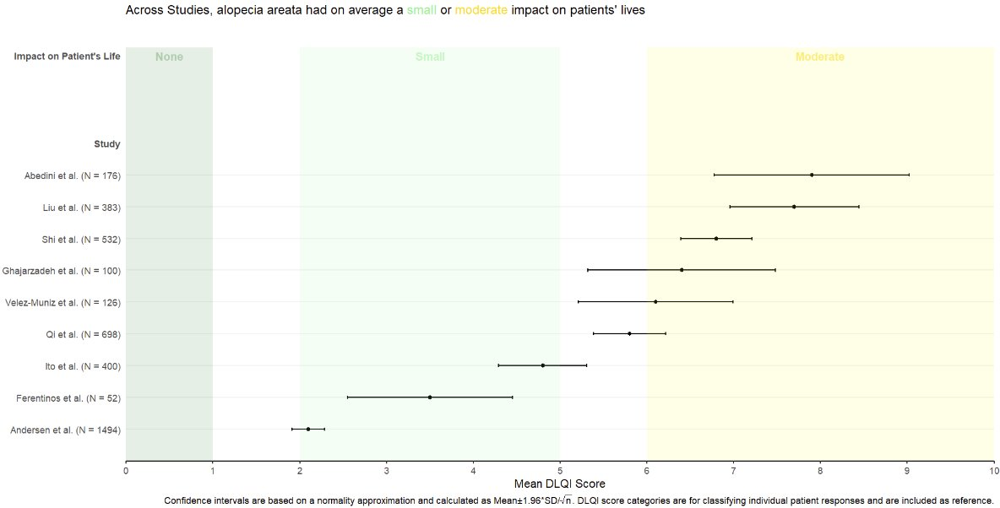

Forest Plot
General Forest Plot
Annotated Forest Plots Alternative 1
## Example data frame
dat <- data.frame(
Index = c(1, 2, 3, 4), ## This provides an order to the data
label = c("Age (65 and older versus <65)", "Male versus Female", "High income versus Low income", "High school or higher versus No High school"),
OR = c(1.00, 2.00, 3.00, 0.50),
LL = c(0.25, 0.90, 2.25, 0.2),
UL = c(1.75, 3.10, 3.75, 0.8),
CI = c("0.25, 1.75", "0.90, 3.10", "2.25, 3.75", "0.20, 0.80")
)
datplot1 <- ggplot(dat, aes(y = Index, x = OR)) +
geom_point(shape = 18, size = 5) +
geom_errorbarh(aes(xmin = LL, xmax = UL), height = 0.25) +
geom_vline(xintercept = 1, color = "red", linetype = "dashed", cex = 1, alpha = 0.5) +
scale_y_continuous(name = "", breaks=1:4, labels = dat$label, trans = "reverse") +
xlab("Odds Ratio (95% CI)") +
ylab(" ") +
theme_bw() +
theme(panel.border = element_blank(),
panel.background = element_blank(),
panel.grid.major = element_blank(),
panel.grid.minor = element_blank(),
axis.line = element_line(colour = "black"),
axis.text.y = element_text(size = 12, colour = "black"),
axis.text.x.bottom = element_text(size = 12, colour = "black"),
axis.title.x = element_text(size = 12, colour = "black"))
## Create the table-base pallete
table_base <- ggplot(dat, aes(y=label)) +
ylab(NULL) + xlab(" ") +
theme(plot.title = element_text(hjust = 0.5, size=12),
axis.text.x = element_text(color="white", hjust = -3, size = 25), ## This is used to help with alignment
axis.line = element_blank(),
axis.text.y = element_blank(),
axis.ticks = element_blank(),
axis.title.y = element_blank(),
legend.position = "none",
panel.background = element_blank(),
panel.border = element_blank(),
panel.grid.major = element_blank(),
panel.grid.minor = element_blank(),
plot.background = element_blank())
## OR point estimate table
tab1 <- table_base +
labs(title = "space") +
geom_text(aes(y = rev(Index), x = 1, label = sprintf("%0.1f", round(OR, digits = 1))), size = 4) + ## decimal places
ggtitle("OR")
## 95% CI table
tab2 <- table_base +
geom_text(aes(y = rev(Index), x = 1, label = CI), size = 4) +
ggtitle("95% CI")
## Merge tables with plot
library("gridExtra")
grid.arrange(plot1, tab1, tab2,
layout_matrix = matrix(c(1,1,1,1,1,1,1,1,1,1,2,3,3), nrow = 1))
Annotated Forest Plots Alternative 2
library("gt")
res_log <- read_csv("https://raw.githubusercontent.com/kathoffman/steroids-trial-emulation/main/output/res_log.csv")
res <- read_csv("https://raw.githubusercontent.com/kathoffman/steroids-trial-emulation/main/output/res.csv")
# res <- res_log |>
# rename_with(~str_c("log.", .), estimate:conf.high) |>
# select(-p.value) |>
# full_join(res)
ForestData <- res_log %>%
rename_with(~str_c("log.", .), estimate:conf.high) %>%
select(-p.value) %>%
full_join(res)
## Get a glimpse of your data
## glimpse(ForestData)
ForestData %>% kbl() %>%
kable_styling(bootstrap_options = c("striped", "hover", "condensed"))| model | log.estimate | log.conf.low | log.conf.high | estimate | conf.low | conf.high | p.value |
|---|---|---|---|---|---|---|---|
| A | -0.6846879 | -0.8947661 | -0.4746097 | 0.5042476 | 0.4087032 | 0.6221278 | 0.0000000 |
| B | -0.0525578 | -0.4201151 | 0.3149994 | 0.9487994 | 0.6569712 | 1.3702585 | 0.7792783 |
| C | -0.0864096 | -0.4567781 | 0.2839589 | 0.9172184 | 0.6333208 | 1.3283783 | 0.6474743 |
| D | -0.1214702 | -0.5869119 | 0.3439714 | 0.8856174 | 0.5560418 | 1.4105383 | 0.6089951 |
| E | -0.4216403 | -0.8819218 | 0.0386411 | 0.6559699 | 0.4139865 | 1.0393974 | 0.0725863 |
| F | -0.2575052 | -0.5093796 | -0.0056308 | 0.7729776 | 0.6008682 | 0.9943850 | 0.0450936 |
| G | 0.0526079 | -0.2671835 | 0.3723992 | 1.0540163 | 0.7655326 | 1.4512123 | 0.7471289 |
| H | 0.0427286 | -0.2871902 | 0.3726475 | 1.0436546 | 0.7503690 | 1.4515726 | 0.7996192 |
| I | -0.4624971 | -0.7340078 | -0.1909864 | 0.6297092 | 0.4799815 | 0.8261438 | 0.0008419 |
| J | 0.0798845 | -0.2224750 | 0.3822440 | 1.0831619 | 0.8005350 | 1.4655697 | 0.6045771 |
## Make point and line range section of the plot
p_mid <- ForestData |>
## 1. Reverse order of factor levels
ggplot(aes(y = fct_rev(model))) +
theme_classic() +
## 2. Show all of our information (point estimate and 95% confidence interval) on the graph
geom_point(aes(x=log.estimate), shape=15, size=3) +
geom_linerange(aes(xmin=log.conf.low, xmax=log.conf.high)) +
## 3. Add a vertical line at 0 and rename the x axis, zoom to the exact height and width
geom_vline(xintercept = 0, linetype="dashed") +
labs(x="Log Hazard Ratio", y="") +
coord_cartesian(ylim=c(1,11), xlim=c(-1, .5)) +
## 4. Add text about protective vs. harmful using the annotate layer
annotate("text", x = -.32, y = 11, label = "Corticosteroids protective") +
annotate("text", x = .3, y = 11, label = "Corticosteroids harmful") +
## 5. remove everything on the y axis
theme(axis.line.y = element_blank(),
axis.ticks.y= element_blank(),
axis.text.y= element_blank(),
axis.title.y= element_blank())
p_mid
## Create estimate annotations plot
# wrangle results into pre-plotting table form
# res_plot <- ForestData |>
# # round estimates and 95% CIs to 2 decimal places for journal specifications
# mutate(across(
# c(estimate, conf.low, conf.high),
# ~ str_pad(
# round(.x, 2),
# width = 4,
# pad = "0",
# side = "right"
# )
# ),
# # add an "-" between HR estimate confidence intervals
# estimate_lab = paste0(estimate, " (", conf.low, "-", conf.high, ")")) |>
# # round p-values to two decimal places, except in cases where p < .001
# mutate(p.value = case_when(
# p.value < .001 ~ "<0.001",
# round(p.value, 2) == .05 ~ as.character(round(p.value,3)),
# p.value < .01 ~ str_pad( # if less than .01, go one more decimal place
# as.character(round(p.value, 3)),
# width = 4,
# pad = "0",
# side = "right"
# ),
# TRUE ~ str_pad( # otherwise just round to 2 decimal places and pad string so that .2 reads as 0.20
# as.character(round(p.value, 2)),
# width = 4,
# pad = "0",
# side = "right"
# )
# )) |>
# # add a row of data that are actually column names which will be shown on the plot in the next step
# bind_rows(
# data.frame(
# model = "Model",
# estimate_lab = "Hazard Ratio (95% CI)",
# conf.low = "",
# conf.high = "",
# p.value = "p-value"
# )
# ) |>
# mutate(model = fct_rev(fct_relevel(model, "Model")))
# saveRDS(res_plot, file = "res_plot.rds")
res_plot <- readRDS("./01_Datasets/res_plot.rds")
res_plot %>% kbl() %>%
kable_styling(bootstrap_options = c("striped", "hover", "condensed"))| model | log.estimate | log.conf.low | log.conf.high | estimate | conf.low | conf.high | p.value | estimate_lab |
|---|---|---|---|---|---|---|---|---|
| A | -0.6846879 | -0.8947661 | -0.4746097 | 0.50 | 0.41 | 0.62 | <0.001 | 0.50 (0.41-0.62) |
| B | -0.0525578 | -0.4201151 | 0.3149994 | 0.95 | 0.66 | 1.37 | 0.78 | 0.95 (0.66-1.37) |
| C | -0.0864096 | -0.4567781 | 0.2839589 | 0.92 | 0.63 | 1.33 | 0.65 | 0.92 (0.63-1.33) |
| D | -0.1214702 | -0.5869119 | 0.3439714 | 0.89 | 0.56 | 1.41 | 0.61 | 0.89 (0.56-1.41) |
| E | -0.4216403 | -0.8819218 | 0.0386411 | 0.66 | 0.41 | 1.04 | 0.07 | 0.66 (0.41-1.04) |
| F | -0.2575052 | -0.5093796 | -0.0056308 | 0.77 | 0.60 | 0.99 | 0.045 | 0.77 (0.60-0.99) |
| G | 0.0526079 | -0.2671835 | 0.3723992 | 1.05 | 0.77 | 1.45 | 0.75 | 1.05 (0.77-1.45) |
| H | 0.0427286 | -0.2871902 | 0.3726475 | 1.04 | 0.75 | 1.45 | 0.80 | 1.04 (0.75-1.45) |
| I | -0.4624971 | -0.7340078 | -0.1909864 | 0.63 | 0.48 | 0.83 | <0.001 | 0.63 (0.48-0.83) |
| J | 0.0798845 | -0.2224750 | 0.3822440 | 1.08 | 0.80 | 1.47 | 0.60 | 1.08 (0.80-1.47) |
| Model | NA | NA | NA | NA | p-value | Hazard Ratio (95% CI) |
p_left <-
res_plot |>
ggplot(aes(y = model)) +
geom_text(aes(x = 0, label = model), hjust = 0, fontface = "bold") +
geom_text(
aes(x = 1, label = estimate_lab),
hjust = 0,
fontface = ifelse(res_plot$estimate_lab == "Hazard Ratio (95% CI)", "bold", "plain")
) +
## Remove the background and edit the sizing
theme_void() +
coord_cartesian(xlim = c(0, 4))
p_left
## Create p-value annotations
p_right <-
res_plot |>
ggplot() +
geom_text(
aes(x = 0, y = model, label = p.value),
hjust = 0,
fontface = ifelse(res_plot$p.value == "p-value", "bold", "plain")
) +
theme_void()
p_right
## Merge tables with plot
library("gridExtra")
grid.arrange(p_left, p_mid, p_right,
layout_matrix = matrix(c(1,1,1,2,2,2,2,2,2,2,2,2,3,3), nrow = 1))
## ggsave("forest-plot.eps", width=9, height=4)meta package
Forest.df <- data.frame(study=c('S1', 'S2', 'S3', 'S4', 'S5', 'S6', 'S7'),
index=1:7,
effect=c(-.4, -.25, -.1, .1, .15, .2, .3),
lower=c(-.43, -.29, -.17, -.02, .04, .17, .27),
upper=c(-.37, -.21, -.03, .22, .24, .23, .33))
## create forest plot
ggplot(data=Forest.df,
aes(y=index, x=effect, xmin=lower, xmax=upper,
label=as.character(effect))) +
geom_label(vjust=-0.1) +
geom_errorbarh(height=.1) +
scale_y_continuous(breaks=1:nrow(Forest.df), labels=Forest.df$study) +
labs(title='Effect Size by Study',
x='Effect Size',
y = 'Study') +
geom_vline(xintercept=0, color='black', linetype='dashed', alpha=.5) +
theme_classic() # theme_minimal()
## https://bookdown.org/MathiasHarrer/Doing_Meta_Analysis_in_R/forest.html
library("meta")
data(Fleiss93)
metaresult<-metabin(event.e, n.e,event.c,n.c,data=Fleiss93,sm="RR",
studlab=paste(study, year),random=FALSE)
forest(metaresult)
ggforestplot package (based on SE)
The R package ggforestplot allows to plot vertical forest plots, a.k.a. blobbograms, and it’s based on ggplot2, see more click (here)[https://nightingalehealth.github.io/ggforestplot/articles/ggforestplot.html]
Basic Forestplot
# devtools::install_github("NightingaleHealth/ggforestplot")
library("ggforestplot")
df <-
ggforestplot::df_linear_associations %>%
filter(
trait == "BMI",
dplyr::row_number() <= 30
)
ggforestplot::forestplot(
df = df,
name = name,
estimate = beta,
se = se,
pvalue = pvalue,
psignif = 0.002,
xlab = "1-SD increment in BMI\nper 1-SD increment in biomarker concentration",
title = "Associations of blood biomarkers to BMI"
)
Comparing several traits
# Extract the biomarker names
selected_bmrs <- df %>% pull(name)
# Filter the demo dataset for the biomarkers above and all three traits:
# BMI, HOMA-IR and fasting glucose
df_compare_traits <-
ggforestplot::df_linear_associations %>%
filter(name %in% selected_bmrs) %>%
# Set class to factor to set order of display.
mutate(
trait = factor(
trait,
levels = c("BMI", "HOMA-IR", "Fasting glucose")
)
)
# Draw a forestplot of cross-sectional, linear associations
# Notice how the df variable 'trait' is used here to color the points
ggforestplot::forestplot(
df = df_compare_traits,
estimate = beta,
pvalue = pvalue,
psignif = 0.002,
xlab = "1-SD increment in cardiometabolic trait\nper 1-SD increment in biomarker concentration",
title = "Biomarker associations to metabolic traits",
colour = trait
)
Grouping the biomarkers
library("ggforce")
# Filter df_NG_biomarker_metadata, that contain the groups, for only the 30
# biomarkers under discussion
df_grouping <-
df_NG_biomarker_metadata %>%
filter(name %in% df_compare_traits$name)
# Join the association data frame df_compare_traits with group data
df_compare_traits_groups <-
df_compare_traits %>%
# use right_join, with df_grouping on the right, to preserve the order of
# biomarkers it specifies.
dplyr::right_join(., df_grouping, by = "name") %>%
dplyr::mutate(
group = factor(.data$group, levels = unique(.data$group))
)
# Draw a forestplot of cross-sectional, linear associations.
forestplot(
df = df_compare_traits_groups,
estimate = beta,
pvalue = pvalue,
psignif = 0.002,
xlab = "1-SD increment in cardiometabolic trait\nper 1-SD increment in biomarker concentration",
colour = trait
) +
ggforce::facet_col(
facets = ~group,
scales = "free_y",
space = "free"
)
ggplot2
library(readxl)
Master_Cancer_D01 <- read_excel("./01_Datasets/HR_Ratio_2024.02.09.xlsx")
Breast_Cancer_Factor <- c(
"3. Impact of Adjuvant Chemotherapy on Breast Cancer Survival",
"3. Breast Cancer Diagnosis to Surgery Time",
"2. Platinum Chemotherapy for Early Triple-Negative Breast Cancer",
"2. Breast Cancer Diagnosis to Surgery Time",
"1. Trastuzumab Regimen in HER2+ Early-Stage Breast Cancer: Meta-Analysis",
"1. Breast Cancer Diagnosis to Surgery Time"
)
Breast_Cancer_Label<- c(
" Impact of Adjuvant Chemotherapy on Breast Cancer Survival",
" Breast Cancer Diagnosis to Surgery Time",
" Platinum Chemotherapy for Early Triple-Negative Breast Cancer",
" Breast Cancer Diagnosis to Surgery Time",
" Trastuzumab Regimen in HER2+ Early-Stage Breast Cancer: Meta-Analysis",
" Breast Cancer Diagnosis to Surgery Time"
)
Breast_Cancer_Label <- paste0(Breast_Cancer_Label,
"\n",
rev(Master_Cancer_D01[which(Master_Cancer_D01$CancerType == "Breast Cancer"),]$Cite))
Breast_Cancer_Data <- Master_Cancer_D01 %>%
filter(CancerType == "Breast Cancer") %>%
mutate(Category = factor(Category, levels = Breast_Cancer_Factor, labels=Breast_Cancer_Label))
Breast_Cancer_Plot <-
Breast_Cancer_Data %>%
ggplot(aes(x = Estimate, y = Category)) +
scale_x_continuous(trans = "log10",
breaks = c(0.6, 0.8, 1.0, 1.2, 1.5),
limits = c(0.5, 1.5)) +
theme_forest() +
scale_colour_ng_d() +
scale_fill_ng_d() +
geom_stripes() +
geom_vline(xintercept = 1, linetype = "dashed", size = 0.5, colour = "black") +
geom_hline(yintercept = 4.5, linetype = "solid", size = 1.2, colour = "black") +
geom_hline(yintercept = 2.5, linetype = "solid", size = 1.2, colour = "black") +
geom_effect(ggplot2::aes(xmin = conf.low, xmax = conf.high),
position = ggstance::position_dodgev(height = 0.5)) +
ggplot2::scale_shape_manual(values = c(21L, 22L, 23L,
24L, 25L)) + guides(colour = guide_legend(reverse = TRUE),
shape = guide_legend(reverse = TRUE)) +
annotate("text", x = 0.65, y = Inf, label = "Relative Improvement in\nOverall Survival From Treatment",
hjust = 0, vjust = 1, colour = "black",size = 5) +
annotate("text", x = 1.08, y = Inf, label = "Relative Decrease in\nOverall Survival From Delay",
hjust = 0, vjust = 1, colour = "black",size = 5) +
geom_textbox(aes(label = paste0(format(Estimate, digits = 3),
" [",
format(conf.low, digits = 3),",",
format(conf.high, digits = 3),
"]"),
x = Estimate), hjust = 0.5, vjust = 1.3, width = 0.132)+
labs(title = "Figure 1: Breast Cancer") +
labs(subtitle = "") +
labs(x = "Hazard Ratio") +
labs(y = "") +
theme(text = element_text(size = 16))
png('./02_Plots/Visualization/ForestPlot/HR_Breast_Cancer.png',width=16, height=8,unit="in", res=600)
Breast_Cancer_Plot
dev.off()## cairo_pdf
## 2knitr::include_graphics("./02_Plots/Visualization/ForestPlot/HR_Breast_Cancer.png")
Alternative to Forest Plot
DLQI data

Source: Figure 2 in Muntyanu A, Gabrielli S, Donovan J, Gooderham M, Guenther L, Hanna S, et al. The burden of alopecia areata: A scoping review focusing on quality of life, mental health and work productivity. J Eur Acad Dermatol Venereol. 2023; 37: 1490–1520. https://doi.org/10.1111/jdv.18926
# Example data frame
data <- data.frame(
Study_Number = 1:12,
Mean_DLQI = c(4.8, 3.5, 2.1, 10.69, 6.1, 7.9, 7.7, 8.1636, 7.21, 5.8, 6.8, 6.4),
Lower_CI = c(2, 1, 1, 9, 4, 6, 5, 7, 6, 4, 5, 5), # Example lower CI values
Upper_CI = c(8, 6, 4, 12, 8, 10, 10, 10, 9, 8, 9, 8) # Example upper CI values
)
ggplot(data, aes(x = factor(Study_Number), y = Mean_DLQI)) +
geom_col(fill = "salmon", width = 0.7) + # Bars with salmon fill
geom_errorbar(aes(ymin = Lower_CI, ymax = Upper_CI), width = 0.2, color = "black") + # Error bars
geom_label(aes(label = round(Mean_DLQI, 2)), vjust = -1.5, fill = "white", color = "black",
fontface = "bold", label.size = 0.5) + # Label with white background
labs(
title = "DLQI in Alopecia Areata Studies",
x = "Study Number",
y = "DLQI Score"
) +
theme_minimal() +
theme(
plot.title = element_text(hjust = 0.5), # Centering the title
axis.title.x = element_text(face = "bold"),
axis.title.y = element_text(face = "bold"),
axis.text.x = element_text(angle = 90, hjust = 1) # Angle x axis text for readability
)
Updated version 1

# Sample data
data <- data.frame(
Study = c("Abedini et al.", "Liu et al.", "Shi et al.", "Ghajarzadeh et al.",
"Velez-Muniz et al.", "Qi et al.", "Ito et al.", "Ferentinos et al.", "Andersen et al."),
N = c(176, 383, 532, 100, 126, 698, 400, 52, 1494),
Mean_DLQI = c(1.5, 2.5, 3.0, 4.0, 5.5, 4.5, 6.0, 6.5, 7.0),
Lower_CI = c(0.5, 1.5, 2.5, 3.5, 4.0, 3.5, 5.5, 6.0, 6.0),
Upper_CI = c(2.5, 3.5, 3.5, 4.5, 7.0, 5.5, 6.5, 8.0, 10.0)
)
data <- data %>%
arrange(Mean_DLQI) %>%
mutate(Study = factor(Study, levels = Study))
# Determine the number of studies to set the y position for annotations
num_studies <- nrow(data)
ggplot(data, aes(y = Study, x = Mean_DLQI, xmin = Lower_CI, xmax = Upper_CI)) +
geom_rect(aes(xmin = 0, xmax = 1, ymin = -Inf, ymax = Inf), fill = "#FFD885", alpha = 0.2) + # None
geom_rect(aes(xmin = 2, xmax = 5, ymin = -Inf, ymax = Inf), fill = "#E4D383", alpha = 0.2) + # Small
geom_rect(aes(xmin = 6, xmax = 10, ymin = -Inf, ymax = Inf), fill = "#9BBC93", alpha = 0.2) + # Moderate
geom_pointrange(size = 0.5, color = "black") +
annotate("text", x = 1, y = num_studies + 0.5, label = "None", vjust = 0) +
annotate("text", x = 3.5, y = num_studies + 0.5, label = "Small", vjust = 0) +
annotate("text", x = 7.5, y = num_studies + 0.5, label = "Medium", vjust = 0) +
scale_y_discrete(limits = c(levels(data$Study), " "), expand = c(0, 0.1)) + # Extend y-axis
scale_x_continuous("Mean DLQI Score", breaks = 0:10) +
labs(y = "Study", title = "Across Studies, alopecia areata had on average a small or moderate impact on patients' lives") +
theme_minimal() +
theme(panel.grid.major = element_blank(), panel.grid.minor = element_blank())
Updated version 2

Reference
- SIG (2024, Feb. 8). VIS-SIG Blog: Wonderful Wednesdays February 2024. Retrieved from https://graphicsprinciples.github.io/posts/2024-09-01-wonderful-wednesdays-february-2024/